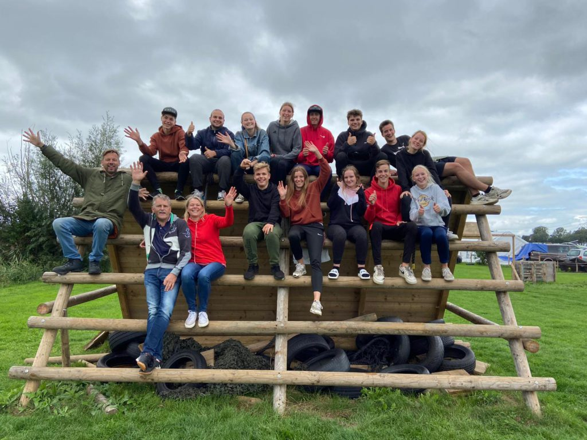
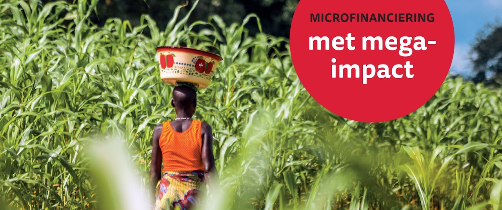
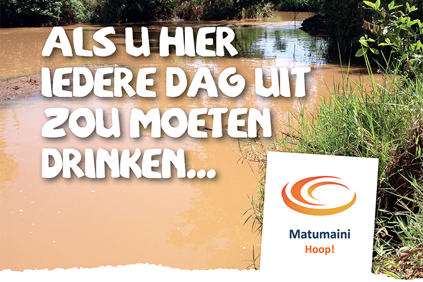

Naaiatelier
Sinds 2025 is het naaiatelier in Kiminini zelfvoorzienend. Er wordt kleding gemaakt en verkocht, waaronder schooluniformen die gezinnen in bruikleen krijgen. Matumaini betaalt nog het salaris van de naaister.
Onze hulp komt rechtstreeks terecht bij mensen die leven in uitzichtloze situaties. We werken kleinschalig, samen met lokale kerken en leiders. Nog steeds zijn we actief in de omgeving van Kitale in Noordwest-Kenia, met name rondom de plaats Kiminini. Hieronder de stand van zaken en de laatste nieuwtjes.
Update 2026 · Laatst bijgewerkt: september 2026
Sinds 2025 is het naaiatelier in Kiminini zelfvoorzienend. Er wordt kleding gemaakt en verkocht, waaronder schooluniformen die gezinnen in bruikleen krijgen. Matumaini betaalt nog het salaris van de naaister.

We betalen schoolgeld, uniform en praktische zaken voor tieners die anders niet naar de secondary school kunnen. Inmiddels steunen we vier studenten.

Een kleine maandelijkse bijdrage in het levensonderhoud van twee gezinnen, en hulp bij onderhoudsprojecten van de lokale kerk in Kiminini.
Tijdens Outreach Kenia 2022 ontstond het verlangen om tienerstudenten die vanwege geldgebrek niet naar school kunnen, financieel te ondersteunen. Na de outreach hebben we besloten hier een permanent project van te maken. De eerste student die we toen onder onze hoede namen, heeft inmiddels zijn middelbare school afgerond en is ons zeer dankbaar voor de steun.
We richten ons op studenten in de tweede helft van hun secondary school: een periode van vier jaar als voorbereiding op een vervolgopleiding. Dat kan een vaktechnische opleiding zijn (timmerman, loodgieter, elektricien) of verder studeren aan een hogeschool of universiteit. Gedurende deze vier jaar betalen wij hun schoolgeld en uniform en bekostigen we enkele andere praktische zaken.
Zo geven wij tieners uit arme gezinnen een enorme kans om een basis te leggen voordat zij een vak gaan leren. Er zijn helaas veel gezinnen waar tieners deze vier jaar niet kunnen volgen door geldgebrek. Na de basisschool stopt het dan; vaak rest een baan als boerenknecht, meestal seizoensgebonden, of niets. Dat is geen goede basis voor het opbouwen van een verder leven. We zullen de komende tijd zeker meer tienerstudenten gaan ondersteunen.
Wilt u een tienerstudent vier jaar lang ondersteunen? Per student is ongeveer € 1.000 tot € 1.200 nodig per periode van vier jaar, afhankelijk van de school. Neem contact op via info@matumaini.nl, dan werken we dit samen verder uit.
Met een kleine maandelijkse financiële bijdrage steunen we twee gezinnen in hun levensonderhoud, vooral voedsel. Zij kunnen nauwelijks rondkomen en wij horen dat zij meer dan blij zijn met onze steun.
Ook helpen we financieel mee aan kleine onderhoudsprojecten die regelmatig plaatsvinden in de lokale kerkgemeenschap. Al sinds het begin van ons werk in Kiminini, de eerste kennismaking was in 2013, zijn wij daar altijd welkom en bezoeken wij kerkdiensten en activiteiten. Onlangs hebben we meegedaan aan een sponsoractie voor het opknappen van de vloer en het podium van de kerk.

Een reis met jongeren naar Kiminini, met een vervolgbezoek in 2024. Het project is helemaal afgerond. Het dak dat we op het kerkgebouw hebben gerealiseerd, heeft de afgelopen jaren goed doorstaan: constructief in orde en geen lekkages.

Na drie maïsprojecten hebben we besloten hiermee te stoppen. De risico's van verbouwen, oogsten en opbrengst, en niet te vergeten de onberekenbare weersomstandigheden, bleken te groot. In de toekomst onderzoeken we nog eens of we iets met landbouw kunnen doen.

Schoon drinkwater voor ruim 3000 mensen. De waterinstallatie functioneert nog steeds goed en is velen tot zegen.
We hebben de lokale bevolking, ruim 3000 mensen, voorzien van schoon drinkwater!
Dit project startte in 2015 en werd in 2019 afgerond. Na ruim vier jaar, heel wat zweetdruppels, gebed, doorzetten en een investering van bijna € 20.000 is er drinkwater. De nazorg bestaat uit onderhoud van de installaties, zo'n € 150 per jaar.
We zijn erg dankbaar voor dit zeer geslaagde project, waar de bevolking dagelijks gebruik van maakt. Ook in 2026 functioneert de waterinstallatie nog steeds goed en is zij velen tot zegen.
De stichting werft fondsen op een kleinschalige, directe manier. Dat gebeurt onder meer zo:
Zo zijn we als kleine stichting dankbaar dat we door uw inzet en donaties het verschil mogen en kunnen maken, ook al is dat soms klein.
„Hij geeft zoveel dat u altijd veel kunt weggeven. En wanneer wij uw gift brengen aan hen die te kort hebben, zullen zij God danken en prijzen voor uw hulp.”